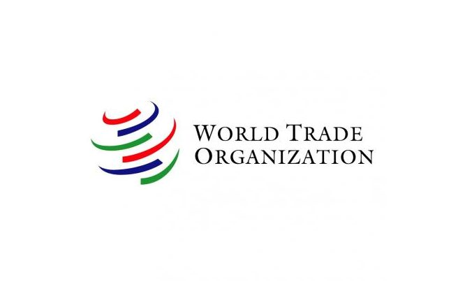

ข้อตกลงองค์การการค้าโลก (WTO)
องค์การการค้าโลก (World Trade Organization: WTO) เป็นองค์การระหว่างประเทศ ที่มีพัฒนาการมาจากการทำความตกลงทั่วไปว่าด้วยภาษีศุลกากรและการค้าหรือแกตต์ (General Agreement on Tariffs and Trade: GATT) เมื่อปี พ.ศ. 2490 ซึ่งขณะนั้น ยังไม่มีสถานะเป็นสถาบันจนกระทั่งการเจรจาการค้ารอบอุรุกวัยสิ้นสุดลง และผลการเจรจาส่วนหนึ่งคือ การก่อตั้ง WTO ขึ้นเมื่อวันที่ 1 มกราคม พ.ศ. 2538 มีสมาชิกเริ่มแรก 81 ประเทศ และมีที่ตั้งอยู่ที่นครเจนีวา ประเทศ สวิตเซอร์แลนด์
ประเทศไทยเข้าเป็นสมาชิก WTO เมื่อวันที่ 28 ธันวาคม 2538 เป็นสมาชิกลำดับที่ 59 มีสถานะเป็นสมาชิกก่อตั้ง ขณะนี้ มีประเทศที่อยู่ระหว่างกระบวนการเข้าเป็นสมาชิก WTO ที่สำคัญ เช่น รัสเซีย เวียดนาม ลาว มูลค่าการค้าระหว่างประเทศสมาชิก WTO ด้วยกันคิดเป็นสัดส่วนกว่าร้อยละ 90 ของการค้าโลก และการขยายตัวของจำนวนสมาชิกจะมีผลให้การค้าระหว่างประเทศสมาชิกขยายตัวเพิ่มขึ้นเป็นลำดับ ปัจจุบัน (ณ เดือนมกราคม 2549) WTO มีสมาชิกอย่างเป็นทางการทั้งสิ้น 149 ประเทศ สมาชิกล่าสุดประกอบด้วย เนปาล กัมพูชา และซาอุดิอารเบีย นอกจากนี้ ตองกา ได้เสร็จสิ้นกระบวนการเข้าสมัครเป็นสมาชิก WTO แล้ว แต่ยังรอการภาคยานุวัติก่อนการเข้าเป็นสมาชิกลำดับที่ 150 อย่างเป็นทางการ
วัตถุประสงค์ WTO
WTO มีการเจรจาอย่างต่อเนื่อง เพื่อเปิดเสรีการค้าระหว่างประเทศอย่างค่อยเป็นค่อยไป (progressive liberalization) ตามความพร้อมของประเทศสมาชิก และระดับการพัฒนาของประเทศสมาชิก กฎกติกาต่างๆ ของ WTO ได้กำหนดให้มีการปฏิบัติอย่างเป็นพิเศษแก่ประเทศกำลังพัฒนา (Special and Differential Treatment: S&D) เพื่อให้สามารถเข้าร่วมในระบบการค้าพหุภาคีได้ WTO จึงเป็นองค์กรที่ไม่หยุดนิ่ง จะมีการเจรจาเพื่อพัฒนาและสร้างกฎกติกาใหม่ๆ เพื่อให้สามารถรองรับกับวิวัฒนาการของการค้าระหว่างประเทศและรูปแบบการค้าโลกที่เปลี่ยนไปอย่างต่อเนื่อง
การเป็นสมาชิกของ WTO ทำให้ประเทศสมาชิกมีสิทธิและพันธกรณี (Rights and Obligations) ที่จะต้องปฏิบัติตามภายใต้ความตกลงต่างๆ ของ WTO กฎระเบียบการค้าระหว่างประเทศของ WTO นอกจากช่วยส่งเสริมให้การแข่งขันทางการค้าเป็นธรรมแล้ว ยังสร้างความมั่นใจให้แก่ทั้ง ผู้ค้าและผู้ลงทุน ผู้ผลิตและส่งออกสามารถคาดการณ์และวางแผนการค้าระหว่างประเทศล่วงหน้าได้
การให้สิทธิ
ประเทศที่เป็นสมาชิกของ WTO จะได้รับสิทธิประโยชน์ทั้งในด้านการลดหย่อน หรือยกเว้นภาษีจากอัตราปกติ (MFN) และการผ่อนผันหรือยกเว้นการปฏิบัติทางด้านข้อจำกัดทางการค้าที่มิใช่ภาษี ท่านสามารถหาข้อมูลเพิ่มเติมเกี่ยวกับสิทธิประโยชน์ของการเป็นสมาชิก WTO ได้ที่ www.wto.org
ระยะเวลา
ในรอบแรกเริ่มต้นตั้งแต่ปี 2538 ถึง 2547 แต่ปัจจุบันการเจรจาในรอบที่ 2 ยังไม่ได้ข้อยุติ จึงให้ใช้หลักเกณฑ์ของรอบแรกต่อไปจนกว่าการเจรจาจะได้ผลและมีข้อตกลงของรอบใหม่มาใช้แทน
การให้สิทธิ
ประเทศที่เป็นสมาชิกของ WTO จะได้รับสิทธิประโยชน์ทั้งในด้านการลดหย่อน หรือยกเว้นภาษีจากอัตราปกติ (MFN) และการผ่อนผันหรือยกเว้นการปฏิบัติทางด้านข้อจำกัดทางการค้าที่มิใช่ภาษี ท่านสามารถหาข้อมูลเพิ่มเติมเกี่ยวกับสิทธิประโยชน์ของการเป็นสมาชิก WTO ได้ที่ www.wto.org
ระยะเวลา
ในรอบแรกเริ่มต้นตั้งแต่ปี 2538 ถึง 2547 แต่ปัจจุบันการเจรจาในรอบที่ 2 ยังไม่ได้ข้อยุติ จึงให้ใช้หลักเกณฑ์ของรอบแรกต่อไป จนกว่าการเจรจาจะได้ผลและมีข้อตกลงของรอบใหม่มาใช้แทน
ประเทศที่ได้รับสิทธิ
ประเทศสมาชิกทุกประเทศ
รายการสินค้าที่ได้รับสิทธิ
ครอบคลุมทุกสินค้า
การลดหย่อน
ประเทศที่พัฒนาแล้วจะลดภาษีนำเข้าลงเฉลี่ยร้อยละ 60 ส่วนประเทศที่กำลังพัฒนาจะลดภาษีนำเข้าลงเฉลี่ยร้อยละ 30 รวมทั้งได้รับการผ่อนผัน หรือยกเว้นการปฏิบัติทางด้านทางการค้าที่มิใช่ภาษี และการแปลงข้อจำกัดดังกล่าว เป็นมาตรการภาษีแทน
เงื่อนไขการขอรับสิทธิ
ประเทศสมาชิกทุกประเทศสามารถรับสิทธิได้ โดยยังไม่มีการกำหนดเงื่อนไขที่แน่นอน โดยเฉพาะทางด้านการรับรองแหล่งกำเนิดสินค้า เนื่องจากการจัดทำกฎว่าด้วยแหล่งกำเนิดสินค้ายังไม่แล้วเสร็จ
ประกาศ / กฎหมาย ที่เกี่ยวข้อง
ประกาศกระทรวงการคลัง
- ประกาศกระทรวงการคลัง เรื่อง การยกเว้นอากร ลด และเพิ่มอัตราอากรศุลกากรตามข้อผูกพันในความตกลงมาร์ราเกซจัดตั้งองค์การการค้าโลก ลงวันที่ 28 ธันวาคม 2564
- ประกาศกระทรวงการคลัง เรื่อง การยกเว้นอากรลด และเพิ่มอัตราอากรศุลกากรตามข้อผูกพันในความตกลงมาร์ราเกชจัดตั้งองค์การการค้าโลก ลงวันที่ 10 พฤศจิกายน 2560
- การยกเว้นอากรลดและเพิ่มอัตราอากรศุลกากรตามข้อผูกพันในความตกลงมาร์ราเกชจัดตั้งองค์การการค้าโลก (ฉบับที่ 3)
- การยกเว้นอากรลดและเพิ่มอัตราอากรศุลกากรตามข้อผูกพันในความตกลงมาร์ราเกชจัดตั้งองค์การการค้าโลก (ฉบับที่ 2)
- บัญชีท้ายประกาศกระทรวงการคลัง เรื่อง การยกเว้นอากรศุลกากรตามข้อผูกพันในความตกลงว่าด้วยการค้าสินค้าเทคโนโลยีสารสนเทศ
- การยกเว้นอากรลดและเพิ่มอัตราอากรศุลกากรตามข้อผูกพันในความตกลงมาร์ราเกชจัดตั้งองค์การการค้าโลก
ประกาศกรมศุลกากร
ความตกลงที่สำคัญภายใต้ WTO
ความตกลงภายใต้องค์การการค้าโลกแบ่งออกเป็น 3 กลุ่ม คือ
1. การเปิดตลาด
1.1 การลดภาษีศุลกากรสินค้าอุตสาหกรรม (รวมสินค้าประมง)
- ประเทศต่างๆ ลดภาษีลงเฉลี่ยร้อยละ 33 ภายใน 5 ปี (เริ่มมกราคม พ.ศ. 2538)
- ห้ามเก็บค่าธรรมเนียมพิเศษ หากไม่มีการเก็บอยู่แล้ว และไม่ได้แจ้งไว้
1.2 สินค้าเกษตร
- ทุกประเทศยกเลิกมาตรการการห้ามนำเข้า โดยให้ปรับเปลี่ยนมาใช้มาตรการภาษีศุลกากรแทน
- ลดภาษีลงเฉลี่ยร้อยละ 36 และ 24 โดยลดลงอย่างน้อยร้อยละ 15 และ 10 ในแต่ละรายการสินค้าภายใน 5 ปี และ 10 ปี สำหรับประเทศพัฒนาแล้ว และกำลังพัฒนาตามลำดับ
- ลดการอุดหนุนสินค้าเกษตร ทั้งการอุดหนุนภายใน และการอุดหนุนส่งออก
1.3 สิ่งทอและเสื้อผ้า ให้มีการเปิดเสรีสิ่งทอและเครื่องนุ่งห่มแทนการใช้ข้อตกลงสินค้าสิ่งทอระหว่างประเทศ (Multi-Fibre Arrangement: MFA) โดย
- ให้ยกเลิกการจำกัดการนำเข้าภายใต้ MFA ทั้งหมดภายใน 10 ปี
- ให้ขยายโควตานำเข้ารายการที่ยังไม่ได้นำกลับเข้ามาอยู่ในแกตต์อย่างต่อเนื่องตั้งแต่ปี พ.ศ. 2538
2. กฎระเบียบการค้า
มีการปรับปรุงและกำหนดกฎระเบียบการค้าที่สำคัญ เช่น
- ความตกลงว่าด้วยการใช้มาตรการสุขอนามัยและสุขอนามัยพืช อนุญาตให้ประเทศสมาชิกกำหนดระดับความปลอดภัยและการตรวจสอบมาตรฐานสินค้านำเข้า แต่จะต้องสอดคล้องกับ มาตรฐานระหว่างประเทศ เพื่อป้องกันมิให้แต่ละประเทศกำหนดมาตรฐานตามใจชอบ ซึ่งจะเป็นอุปสรรคต่อการค้า
- ความตกลงว่าด้วยการตอบโต้การทุ่มตลาด กำหนดหลักเกณฑ์และวิธีการไต่สวนการทุ่มตลาดให้รัดกุมยิ่งขึ้นเพื่อให้ประเทศต่างๆ ปฏิบัติให้สอดคล้องกัน เป็นการลดโอกาสที่อาจมีประเทศผู้นำเข้าใช้มาตรการตอบโต้เพื่อกีดกันการค้าอย่างไม่เป็นธรรม
- ความตกลงว่าด้วยการตอบโต้การอุดหนุน กำหนดประเภทของการอุดหนุนไว้อย่างชัดเจนว่าการอุดหนุนประเภทใดเป็นการอุดหนุนที่ต้องห้าม ประเภทใดเป็นการอุดหนุนที่ทำได้และประเภทใดเป็นการอุดหนุนที่เมื่อทำแล้วอาจถูกมาตรการตอบโต้ นอกจากนั้น ยังได้กำหนดแนวปฏิบัติในการไต่สวนเพื่อการตอบโต้สินค้าเข้าที่ได้รับการอุดหนุนจากประเทศผู้ผลิตเพื่อให้แต่ละประเทศถือปฏิบัติ
3. เรื่องใหม่ ๆ
มีการจัดทำข้อตกลงเพื่อเป็นแนวทางในการดำเนินการในเรื่องที่ยังไม่มีกฎเกณฑ์ของแกตต์กำกับมาก่อนหรือหากมีก็น้อยมาก ได้แก่
- ทรัพย์สินทางปัญญาที่เกี่ยวกับการค้า (TRIPS) กำหนดขอบเขตและมาตรฐานการคุ้มครองทรัพย์สินทางปัญญาประเภทที่สำคัญ ได้แก่ สิทธิบัตร เครื่องหมายการค้า ลิขสิทธิ์การออกแบบ วงจรรวม สิ่งบ่งชี้ทางภูมิศาสตร์ และความลับทางการค้า
- การค้าบริการ กำหนดกรอบความตกลงทั่วไปว่าด้วยการค้าบริการ โดยมีหลักการสำคัญในทำนองเดียวกับแกตต์ เช่น หลักการไม่เลือกปฏิบัติ ความโปร่งใส การเปิดเสรีแบบค่อยเป็นค่อยไป เป็นต้น
- มาตรการลงทุนที่เกี่ยวข้องกับการค้า (TRIMs) กำหนดหลักการสำคัญคือ ทุกประเทศต้องยกเลิกมาตรการลงทุนที่มีผลเท่ากับการกีดกันการนำเข้าโดยประเทศพัฒนาแล้วต้องยกเลิกใน 2 ปี ประเทศกำลังพัฒนาใน 5 ปี มาตรการเหล่านั้น ได้แก่ มาตรการกำหนดให้ใช้วัตถุดิบในประเทศในการผลิตสินค้าหรือที่เรียกว่า local content requirement ไม่ว่าข้อกำหนดนี้จะเป็นข้อบังคับหรือเป็นเงื่อนไขต่อการที่ผู้ผลิตภายในจะได้รับสิทธิพิเศษใดๆ ก็ตาม เช่น สิทธิในข้อยกเว้นไม่เสียภาษีตามนโยบายส่งเสริมการลงทุน เป็นต้น
โครงสร้างของ WTO
องค์กรของ WTO ที่ทำหน้าที่กำหนดนโยบายตลอดจนควบคุมการดำเนินงานของสมาชิกในเรื่องต่างๆ เรียงตามลำดับความสำคัญ คือ ที่ประชุมระดับรัฐมนตรี (Ministerial Conference) คณะมนตรีใหญ่ (General Council) คณะมนตรี (Council) และคณะกรรมการต่างๆ (Committee) ซึ่งประกอบด้วยผู้แทนของสมาชิก WTO โดยมีฝ่ายเลขานุการช่วยด้านการบริหารงานทั่วไป
WTO กำหนดให้มีการประชุมระดับรัฐมนตรีอย่างน้อยทุกๆ 2 ปี เพื่อทบทวนปัญหาในการปฏิบัติตามข้อผูกพันของสมาชิก และวางแนวทางในการเปิดเสรีภายใต้ WTO ต่อไป
หน้าที่ของ WTO
- บริหารความตกลงและบันทึกความเข้าใจที่เป็นผลจากการเจรจาในกรอบของ GATT/WTO รวม 28 ฉบับ โดยผ่านคณะมนตรี (Council) และคณะกรรมการ (Committee) ต่างๆ ตลอดจนดูแลให้มีการปฏิบัติตามพันธกรณี
- เป็นเวทีเพื่อเจรจาลดอุปสรรคทางการค้าระหว่างสมาชิกทั้งในรูปของมาตรการภาษีศุลกากรและมาตรการที่มิใช่ภาษีศุลกากร
- เป็นเวทีสำหรับแก้ไขข้อขัดแย้งทางการค้าระหว่างสมาชิก และหากไม่สามารถตกลงกันได้ก็จะมีการจัดตั้งคณะผู้พิจารณา (Panel) ทำหน้าที่ตรวจสอบข้อเท็จจริงและให้ข้อเสนอแนะ รวมทั้งมีกลไกยุติข้อพิพาทด้วย
- ติดตามสถานการณ์การค้าระหว่างประเทศและจัดให้มีการทบทวนนโยบาย การค้าของสมาชิกอย่างสม่ำเสมอเพื่อเป็นการตรวจสอบให้เป็นไปในแนวทางการค้าเสรี
- ให้ความช่วยเหลือแก่ประเทศกำลังพัฒนาในด้านข้อมูล ข้อแนะนำเพื่อให้สามารถปฏิบัติตามพันธกรณีได้อย่างเพียงพอตลอดจนทำการศึกษาประเด็นการค้าที่สำคัญๆ
- ประสานงานกับกองทุนการเงินระหว่างประเทศ (IMF) และธนาคารโลกเพื่อให้นโยบายเศรษฐกิจโลกสอดคล้องกันยิ่งขึ้น
Reference :